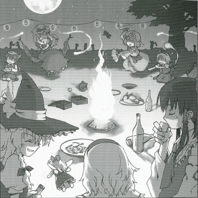

Night Parade of One Hundred Oni Every Four Days
The shrine was infested with youkaiIt has been reported recently that the shrine maiden of the Hakurei Shrine has been acting in a strange manner.
There have been a great number of youkai going to the shrine for parties and rabble-rousing.
While it was difficult to see at the time, after a through investigation, it is now understood why conditions were so strange.
When the party-goers showed signs of slight fatigue, they would appear to treat each other in a doubtful manner.
The atmosphere was not unlike that of a murder case at an isolated mountain cottage. An atmosphere not normally felt at most parties.
I hid myself to observe the proceedings, but nothing happened and everyone left after the party was over.
I still thought there was something strange so I continued my observation, but the fact is that the party had not started that day, but had lasted intermittently for three days.
The length of this year's winter was overwhelming, as spring was unusually slow to arrive.
At last, spring arrived the other day, just in time for summer.
The radical change in temperature might have messed up their heads.
However, only the shrine maiden seemed to realize the situation, and wondered why a great number of youkai were gathering at her shrine.
She was also concerned with the spectacle the party was creating as well.
To my eyes, it seemed that during the party they were betting something on the contests that took place there.
My guess is that the shrine maiden decided to challenge everyone to a series of record-setting contests, but this resulted in a situation where no one could be pulled away from the party.
But it is very possible that out of all of the youkai, only Reimu was able to able to be successful in these events, as everyone was tired from going to too many parties.
She might have been first one to become frustrated with having so many parties, and tried to make that unusual atmosphere.
There was no other big news in this time of peace.
In this year there was already a big incident where where spring didn't come, but after seeing the reaction to that, peace might continue.
Peaceful times like this are enjoyable.
However, there are those who have noticed cause for concern in very thin youkai mist around the shrine's perimeter.
If the shrine maiden has thrown aside the realities of the party, I wonder if there are any others who took notice of that incident.
If my expectations are wrong, that's fine. However, this mist might be slightly troubling to others.
But this mist is a power that Gensokyo hasn't felt in a long time.
Touhou Suimusou ~ Immaterial and Missing Power.
The long winter had ended, and Gensokyo was finally greeting spring.
When it comes to spring, both humans and youkai have one thing in mind, flower-viewing.
But this year, there were too many feasts.
Why, the parties were held once every three days.
But with every party, a mysterious mist was spreading throughout Gensokyo.